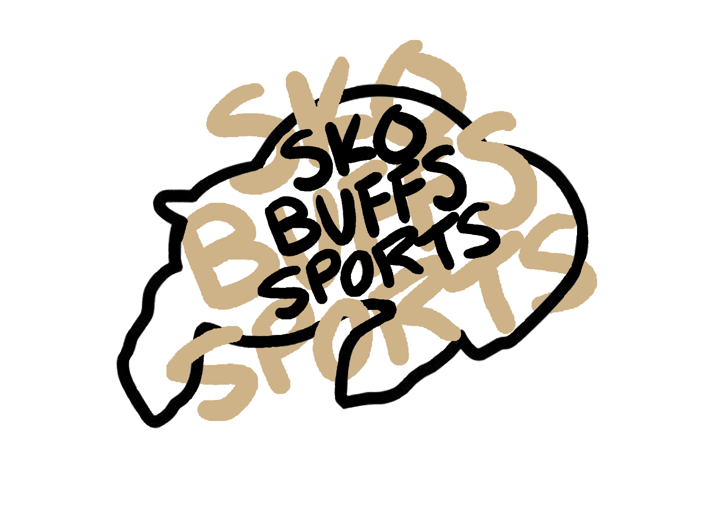
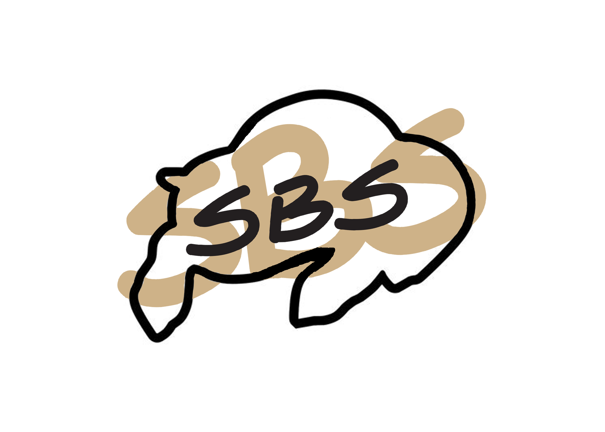
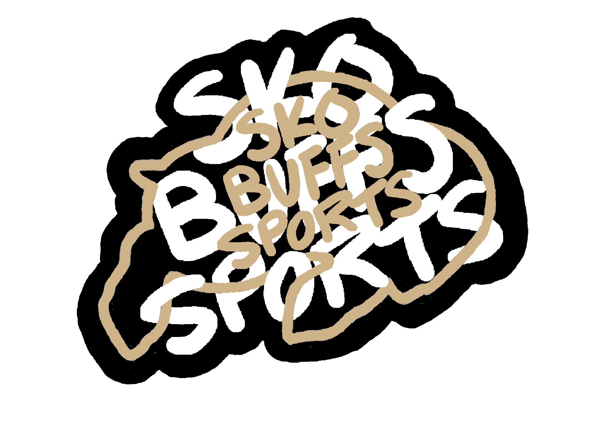
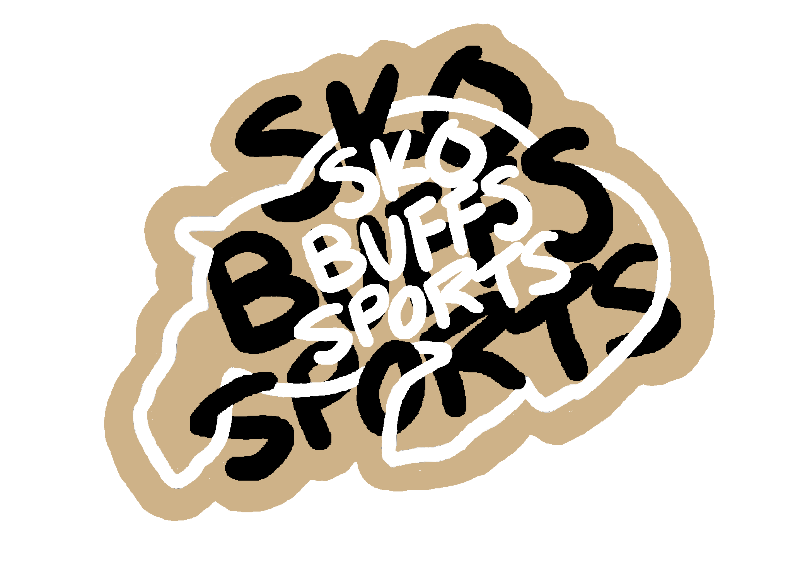
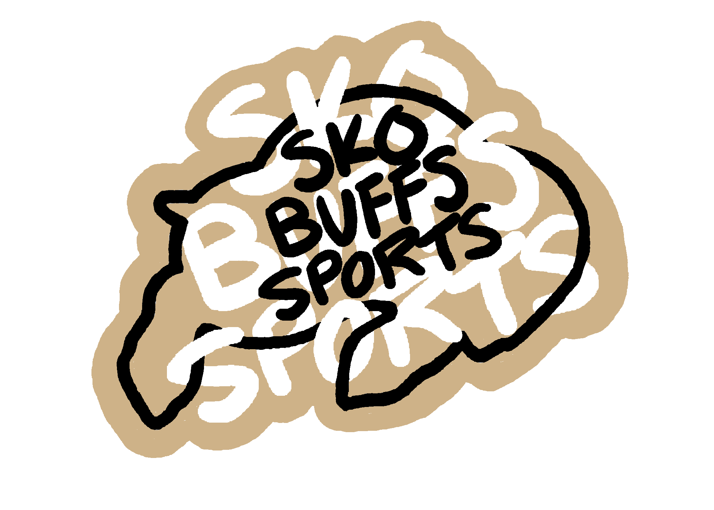

zoe paulson
The main logo, followed by the smaller logo with initials. The main one is used for branding in general, and the secondary one is used for social media and others.
 Inverted logos, which are used for stickers and other merchandise.
  